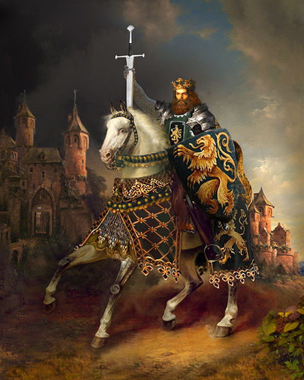
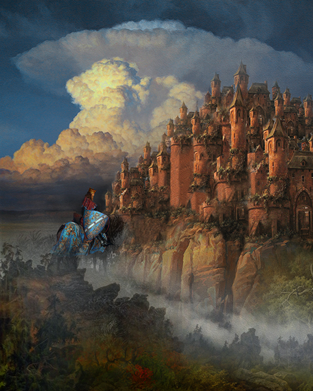
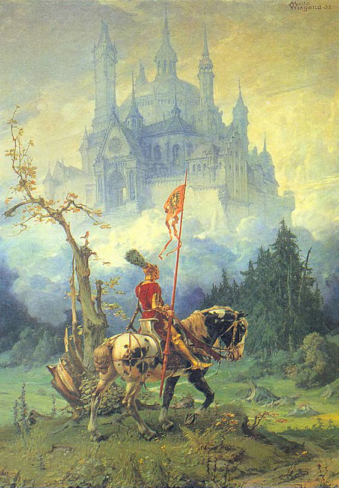
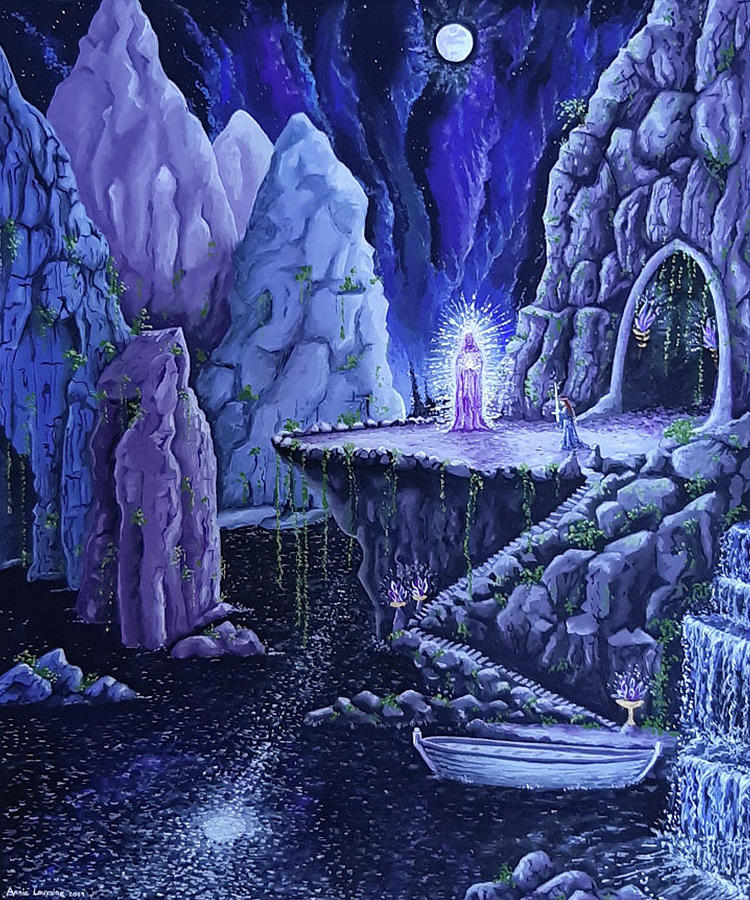
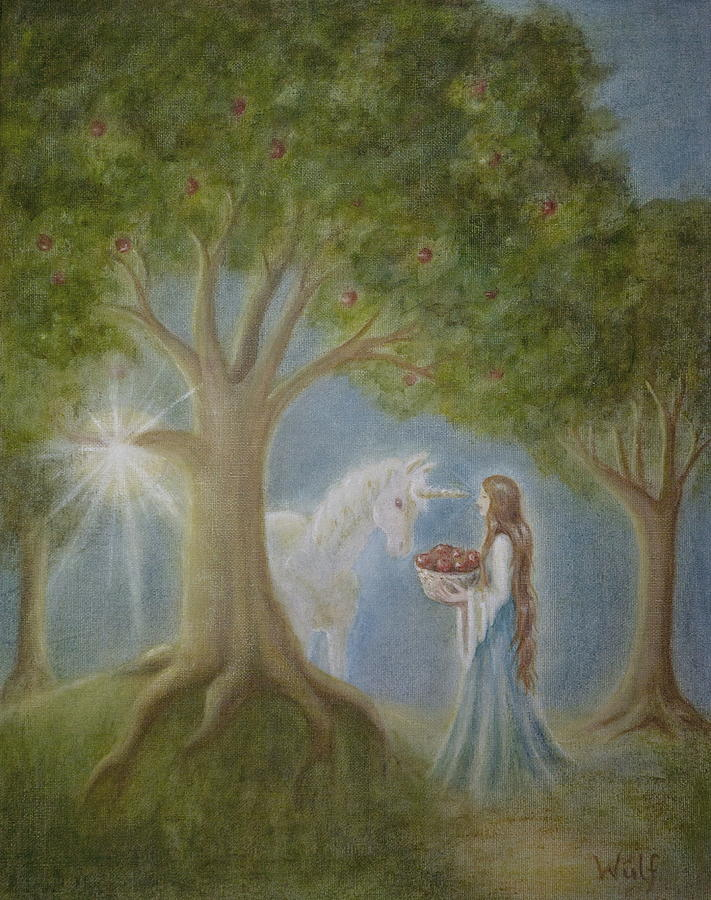
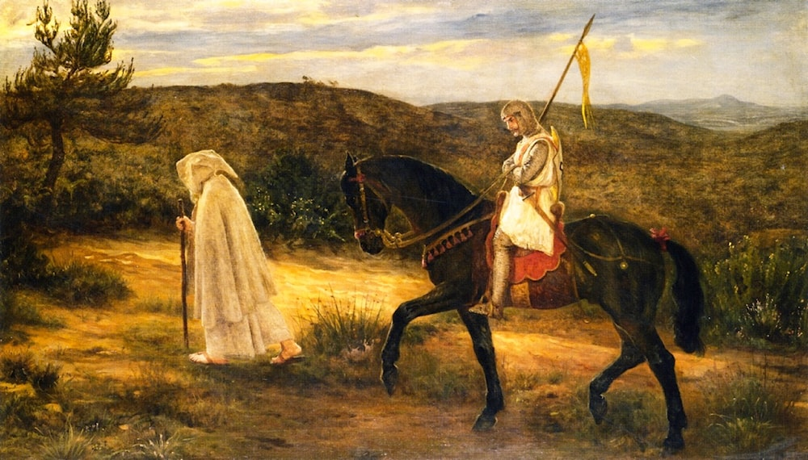
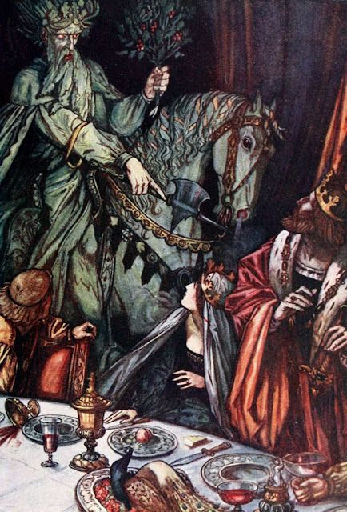
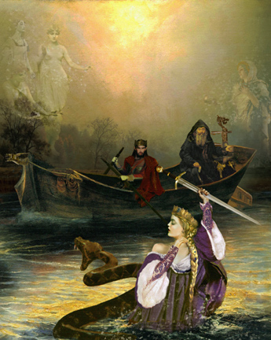
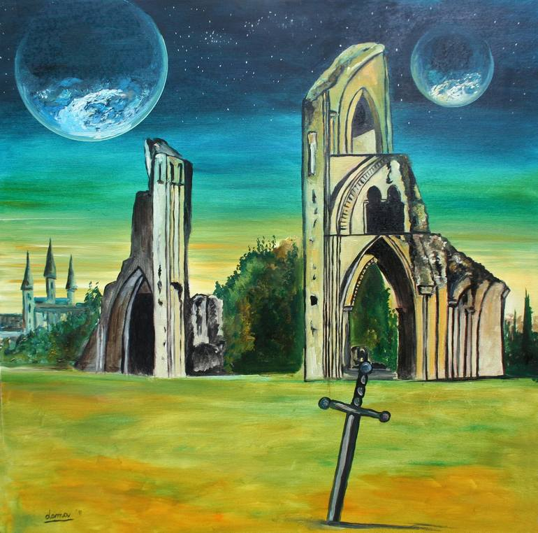

A Lenda do Rei Arthur
Prefácio
A lenda do Rei Arthur é uma das histórias mais ricas e envolventes da literatura ocidental, cheia de heroísmo, magia, traição e amor. Originada nos contos medievais, ela entrelaça mitologia e história, criando uma narrativa que tem capturado a imaginação de muitos por séculos.
Origem da Lenda
A história de Arthur tem raízes em textos antigos, incluindo os "Annales Cambriae" e os "Historia Brittonum". No entanto, a versão mais completa e conhecida da lenda arthuriana surge a partir das obras de Geoffrey de Monmouth, Chrétien de Troyes, Sir Thomas Malory e outros escritores medievais.
O Rei Arthur
• Nascimento e Ascensão ao Trono: Arthur é frequentemente descrito como filho de Uther Pendragon e Igraine. Sua infância é cercada de mistério e proteção, crescendo sob a tutela de Merlin. Arthur ascende ao trono ao retirar a espada Excalibur de uma pedra, provando ser o legítimo rei da Bretanha.
• Camelot e a Távola Redonda: Arthur estabelece seu reino em Camelot, onde reúne os Cavaleiros da Távola Redonda. Camelot simboliza um reino de justiça e nobreza, onde os cavaleiros juram defender os fracos e lutar pelo bem.
• Guinevere e Lancelot: Arthur se casa com Guinevere, cuja beleza e graça são lendárias. No entanto, seu amor por Lancelot, o mais nobre dos cavaleiros, cria um triângulo amoroso que eventualmente leva à queda de Camelot.
Avalon
• Origem do Nome: O nome "Avalon" deriva do termo celta "Avallach", que significa "Ilha das Maçãs". A maçã é um símbolo de imortalidade e conhecimento em muitas culturas.
• Ilha Mística: Avalon é uma ilha mágica onde Excalibur foi forjada e onde Arthur é levado após ser mortalmente ferido na batalha de Camlann. Representa um lugar de cura, mistério e sabedoria.
• Guardas de Avalon: Personagens como a Dama do Lago (Viviane) e Morgana Le Fay estão intimamente ligados a Avalon. A Dama do Lago é a guardiã de Excalibur, enquanto Morgana é uma poderosa feiticeira que tem uma relação complexa com Arthur.
Merlin
• Papel na Lenda: Merlin é o mago conselheiro de Arthur, desempenhando um papel crucial em sua ascensão ao trono. Ele é um personagem de sabedoria e poder, conhecido por suas habilidades proféticas e mágicas.
• Origem e Habilidades: Merlin é frequentemente descrito como tendo uma origem misteriosa, sendo filho de uma mulher mortal e de um ser sobrenatural. Ele possui vastos conhecimentos de magia, alquimia e profecia.
• Conselheiro e Guia: Merlin orienta Arthur em momentos críticos, ajudando-o a estabelecer Camelot e a Távola Redonda. Ele também está envolvido na obtenção de Excalibur e na concepção de Arthur.
Outros Personagens Importantes
• Sir Lancelot: Um dos mais nobres cavaleiros da Távola Redonda, conhecido por sua bravura e seu romance trágico com Guinevere.
• Sir Gawain: Sobrinho de Arthur, famoso por sua força e lealdade, protagonista de muitos contos como "Sir Gawain e o Cavaleiro Verde".
• Mordred: Em algumas versões, ele é o filho ilegítimo de Arthur e seu inimigo mortal, desempenhando um papel crucial na queda de Camelot.
Significado Simbólico
• Realeza e Justiça: Arthur representa o ideal de um rei justo e nobre, lutando pelo bem e governando com sabedoria.
• Magia e Mistério: A presença de personagens mágicos como Merlin e locais como Avalon infunde a lenda com elementos de mistério e fantasia, simbolizando o poder do desconhecido.
• Triunfo e Tragédia: A lenda é uma mistura de grandeza e falibilidade humana, com a ascensão de Camelot simbolizando esperança e sua queda representando a tragédia inevitável da condição humana.
Reflexão
A lenda do Rei Arthur, com suas histórias de bravura, amor, magia e traição, continua a ser uma fonte rica de inspiração e reflexão. Personagens como Arthur, Merlin, Guinevere e Lancelot, bem como lugares como Avalon e Camelot, são símbolos poderosos que nos convidam a explorar temas de liderança, justiça, sacrifício e o eterno confronto entre o bem e o mal. Através dessas histórias, a lenda arthuriana nos oferece uma janela para a alma humana e suas aspirações mais profundas.